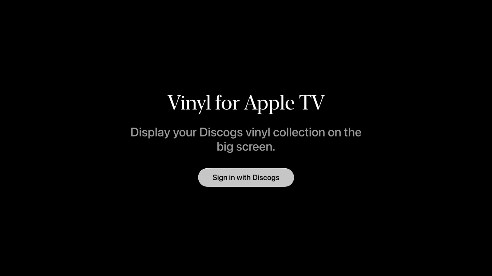
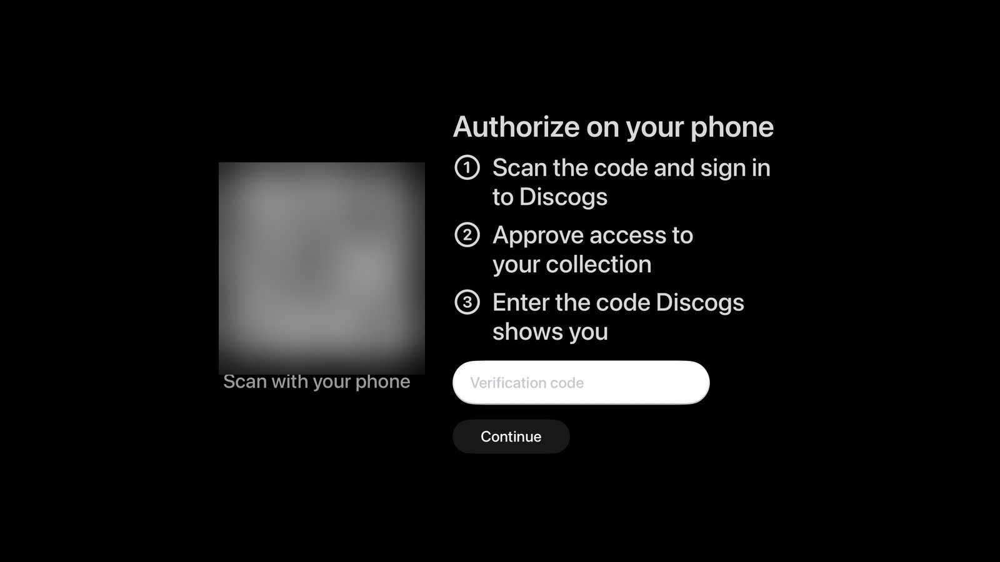
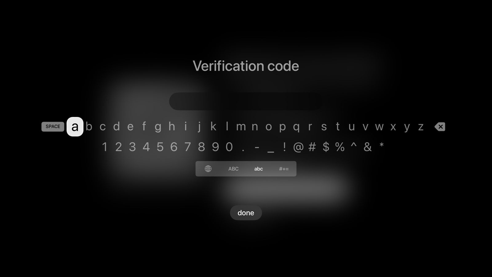

Quick start guide
Getting your Discogs collection onto your Apple TV — step by step.
This guide walks you through signing into the app for the first time. It is written for anyone who has not connected an app to a music service like Discogs before. There are seven small steps. The whole thing takes about five minutes.
You will use your Apple TV the whole time. During one step you will look at your phone (or a tablet) briefly to confirm that the app may read your record collection.
Before you begin
-
An Apple TV running tvOS 18 or later.
To check, on your Apple TV go to Settings → General → About.
-
A free Discogs account.
If you do not have one yet, you can create one on the Discogs website in about a minute.
-
At least a few records in your Discogs collection.
The app shows what is on your shelf, so it needs something to show. New to Discogs? Their help centre has step-by-step articles on adding records.
-
Your phone or a tablet within reach, with a camera that can scan a QR code.
You will use it briefly during sign-in.
Step 1. Open the app
-
On the Apple TV home screen, focus Vinyl for Apple TV and press the centre button on the Siri Remote to open it.
-
On the welcome screen, choose Sign in with Discogs.
It is the only button on the screen, below the title.

Step 2. Look at the QR code
The TV now shows a square pattern of black and white dots (this is a QR code), a numbered list of what to do on your phone, and a white field labelled Verification code. Keep your phone ready.

Step 3. Scan the code with your phone
-
Open the Camera app on your phone.
-
Point the camera at the TV so the QR code is centred in the viewfinder.
-
Tap the link banner that appears on your phone.
If no banner appears, move a little closer to the TV and hold the phone steady until one does.
Step 4. Sign in to Discogs and authorise the app
-
Sign in to Discogs with your username and password.
If your browser already remembers them, you may only need to tap to confirm.
-
Read the short page Discogs shows you.
It asks you to authorise Vinyl for Apple TV to use your Discogs account. The app only reads your collection.
-
Press the Authorize button on the Discogs page.
The app is read-only. It can view your Discogs collection but cannot add, edit, or remove any records on your account.
To disconnect the app later, visit your Discogs application settings and revoke access.
Step 5. Note the code Discogs gives you
-
Find the verification code on the Discogs page.
It is a short line of letters and numbers, roughly ten characters long, shown in a box.
-
Leave the Discogs page open.
You will read the code from it in the next step.
Step 6. Type the code on your TV
-
Back on the Apple TV, focus the
Verification codefield. -
Press the centre button on the Siri Remote.
The on-screen keyboard appears: a single row of lowercase letters, with numbers and symbols below.
-
Type the code exactly as Discogs showed it, capital letters included.
-
Choose Continue.
The TV briefly shows
Signing you in….

If your iPhone is signed in to the same Apple ID as your Apple TV, you can use it as a keyboard. A notification appears on the iPhone offering to type on the Apple TV — tap it and enter the code on your phone instead. This is usually much faster than tapping each character with the Siri Remote.
If the code is rejected, the TV shows Couldn't sign in. The code may be mistyped, or it may have expired: Discogs codes stop working 15 minutes after the QR code appears.
Choose Try again on the TV and start again from Step 2. You will get a fresh code each time. (Pressing Back on the Siri Remote here takes you out of the app.)
Step 7. Wait while your library is built
The TV now shows Building your library with a counter, like Fetching 247/812 albums…. This is the app downloading your record list from Discogs. Depending on the size of your collection, it takes anywhere from a few seconds to a few minutes. This only happens the first time you sign in — afterwards the app remembers your collection and only checks for new records.
Some covers may load twice. The app first shows the image Discogs has on file, then looks each record up on MusicBrainz and, when the Cover Art Archive (a free, open image database) has a cover for it, swaps that one in. The app does this once for each record, and the cover it settles on stays cached on your Apple TV.
When the count finishes, the gallery opens automatically. You are in.
What to do next
You are now on the cover gallery.
-
Swipe left or right on the Siri Remote's clickpad to flip between records.
Pressing the left or right edge of the clickpad does the same.
-
Press the centre button on a cover to open its detail screen with the tracklist.
-
From there, swipe up on the clickpad to show the cover full-screen with an ambient halo, ideal for sitting with a record while it plays on your turntable.
Pressing the top edge of the clickpad does the same.
-
If something does not look right
I cannot see any of my records.
Check on the Discogs website that the records on your shelf are tagged as Vinyl — the app only shows vinyl releases, so CDs, cassettes and digital releases will be hidden by design. Your collection can be public or private: the app reads it signed in as you.
Only some of my records appeared.
The app reads the folder Discogs calls All, which holds your whole collection, records in your own custom folders included. Records you add on Discogs later appear the next time the app starts, or straight away when you choose Refresh collection in the Settings menu (the gear at the top of the gallery). If a genre is picked in the gallery's genre menu, only that genre shows; choose All genres to see everything.
The QR code will not scan.
The simplest fix is to sit closer to the TV so the camera can see the pattern clearly, or to turn up the room lights. If your phone's camera cannot scan QR codes, use another phone or tablet that can, and sign in to Discogs on that one.
A cover is missing or blurry.
The app shows the cover the Cover Art Archive (a free, open image database) has for a record, and the image on Discogs when it has none. Discogs allows community-submitted images, and not every release has a high-quality one. For a record the Cover Art Archive has no cover for, uploading a better cover to Discogs is the lasting fix; it shows up in the app after you choose Refresh collection in the Settings menu.
Something else is off.
Send a note to support.vinyl.for.appletv@gmail.com. Including your Apple TV model, your tvOS version, and what you were doing when the problem appeared helps a lot. The support page has a checklist of useful details to include.